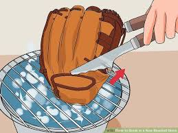
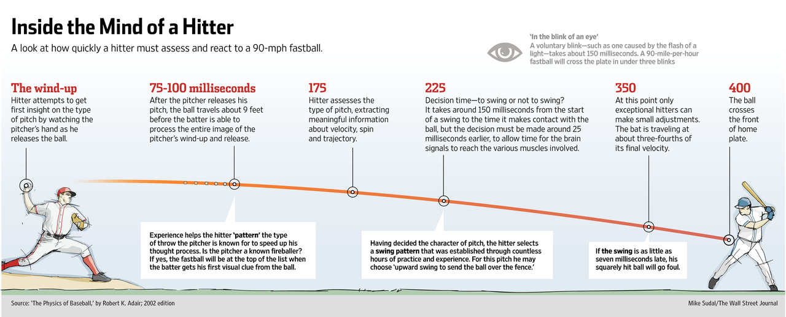

| 1.The best way to learn fielding and catching techniques is by wearing a baseball glove that fits very well. | |
| 2. When buying new gloves, you have to break it in: Playing catch with friends or use it more, play with it more! Not only your breaking it but you’re also having fun and a very good way to practice. It usually takes years to make a very good glove but of course it depends on how much you use it. |  |
| 3. If you just bought a glove and don’t have enough time to break it, one method of speeding up the process is by rubbing shaving cream into the pocket of the glove, placing a ball in the pocket, tying a rope or a sock around the glove and then keeping the glove in dry place. |
| 4.When batting, don’t swing at anything below your knees or anything higher than your shoulders. Unless the pitcher lacks in controlling the ball, then it's a different story. | |
| 5.You might have heard that our eyes tells everything so when your batting you focus on the pitchers eye, which is wrong. Instead, pick out a spot where the pitcher’s hand will come out of the sky to deliver the ball, and focus on that spot. |  |